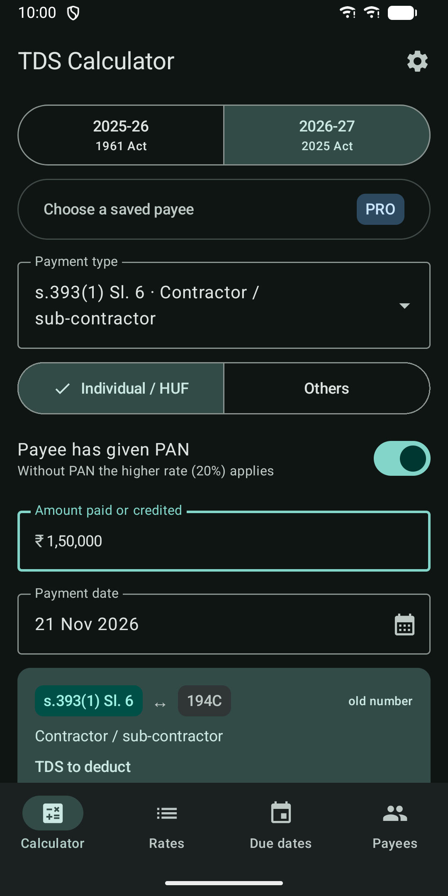
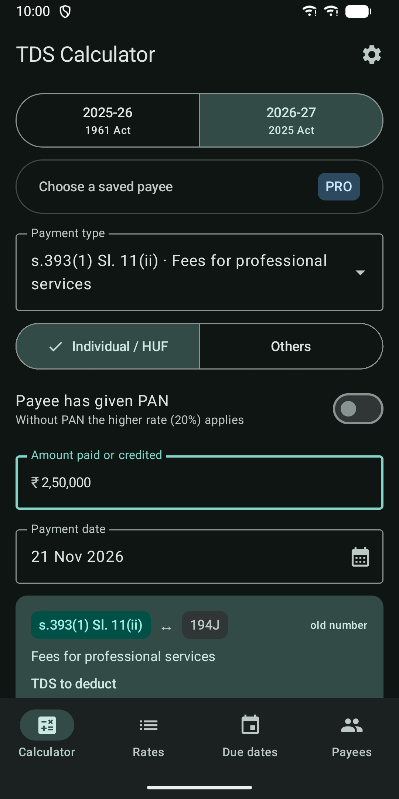
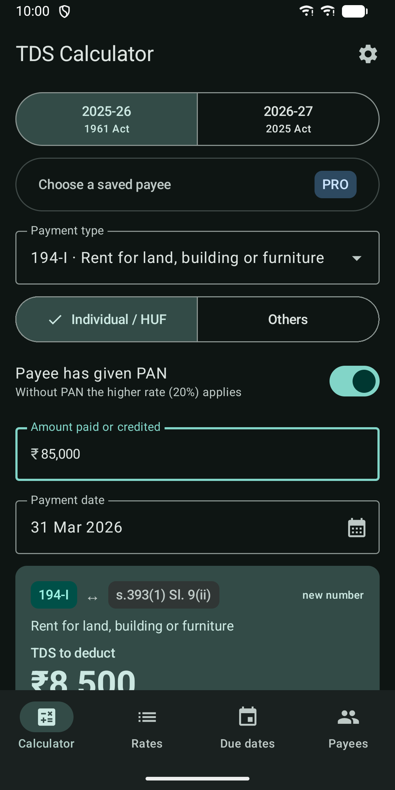
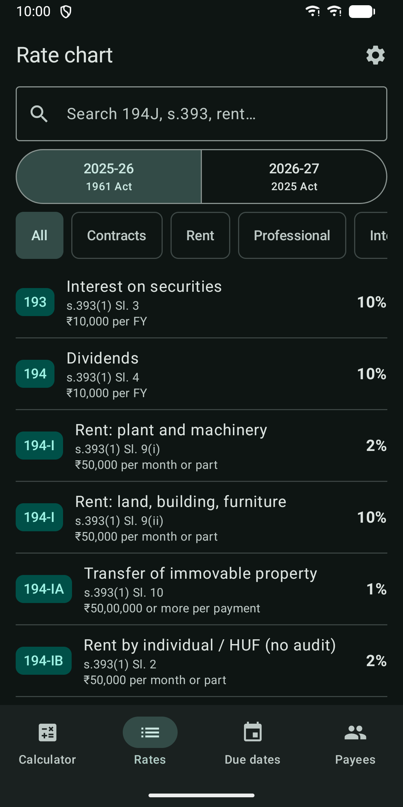

TDS-Abschnitt-Rechner Indien
TDS nach Abschnitt berechnen, mit Nummern beider Gesetze und Fristen.





Über die App
Berechnen Sie TDS auf Nicht-Gehaltszahlungen in Sekunden. Zahlungsart wählen, Betrag eingeben und sofort TDS, Satz, Nettozahlung und Abschnitt sehen, nach beiden Nummerierungssystemen. TDS Section Calc deckt das Geschäftsjahr 2025-26 (Income-tax Act 1961) und 2026-27 (Income-tax Act 2025) ab. Jedes Ergebnis zeigt die alten und neuen Abschnittsnummern nebeneinander, sodass Sie ohne Umrechnungstabelle auf das neue Gesetz umsteigen können. Die App hat keinen Internetzugriff. Sätze, Schwellenwerte und Abschnittsnummern sind in der App enthalten und ändern sich nur mit App-Updates. IN DER KOSTENLOSEN APP ENTHALTEN • TDS-Rechner für Nicht-Gehaltszahlungen: Auftragnehmer, Miete, Honorare für freie und technische Dienste, Provisionen, Zinsen, Warenkauf, Immobilien und mehr • Alte und neue Abschnittsnummern bei jedem Ergebnis und in der Satztabelle • Auswahl des Geschäftsjahres: 2025-26 (Gesetz 1961) und 2026-27 (Gesetz 2025) • Schwellenwertprüfung pro Zahlung, pro Monat (Miete) und pro Geschäftsjahr, mit Hinweis bei Gesamtgrenzen • PAN angegeben oder nicht: Der höhere Satz ohne PAN wird automatisch angewendet • Person/HUF und Sonstige, wo die Sätze abweichen • Durchsuchbare Satztabelle mit Sätzen, Schwellenwerten und Hinweisen je Abschnitt • Fristenkalender: monatliche Abführungstermine (7., für März der 30. April) und vierteljährliche TDS-Meldetermine • Startbildschirm-Widget mit der nächsten TDS-Frist und den verbleibenden Tagen • Stand der Sätze und App-Version bei jedem Ergebnis • Helles und dunkles Design nach Systemeinstellung, Layouts für Smartphone und Tablet, Beschriftungen für Screenreader PRO-FUNKTIONEN (einmaliger Kauf über Google Play, kein Abo) • Gespeicherte Zahlungsempfänger mit PAN, Typ und Standardabschnitt, verschlüsselt auf Ihrem Telefon • Bescheinigungen für reduzierten oder keinen Abzug mit Satz, Gültigkeit und Limit. Der Rechner nutzt den Bescheinigungssatz, solange sie gültig ist und das Limit reicht • Berechnungsverlauf je Empfänger und Schwellenprüfung über das ganze Geschäftsjahr • Export als PDF oder Excel (.xlsx) über das Teilen-Menü. Die PAN wird standardmäßig maskiert • Fristerinnerungen 1 bis 7 Tage vorher • Rechner für Zinsen und Verspätungsgebühren: verspäteter Abzug, verspätete Abführung und verspätete Abgabe • Passwortgeschützte Sicherung und Wiederherstellung über die Dateiauswahl • App-Sperre mit Fingerabdruck, Gesicht oder Bildschirmsperre IHRE DATEN • Kein Konto und kein Tracking. Die App hat keine Internetberechtigung • Empfängerdaten sind auf Ihrem Telefon verschlüsselt, der Schlüssel liegt im Android Keystore • Von der Cloud-Sicherung ausgeschlossen. Ihre Daten verlassen das Telefon nur beim Export oder bei der Sicherung • Erinnerungen und Widget zeigen nur Fristen, nie Namen oder PAN Für kleine Unternehmen, Steuerberater und CAs sowie Freiberufler, die TDS auf Zahlungen an Auftragnehmer, Vermieter, Fachleute und Agenten einbehalten. Hinweis: Die Ergebnisse sind Schätzungen und keine Steuerberatung. Prüfen Sie Gesetz, Vorschriften und Bekanntmachungen, bevor Sie einbehalten, abführen oder melden. Gehalts-TDS (s.192), TCS, Zahlungen an Nichtansässige und die Abgabe von Meldungen sind nicht enthalten.